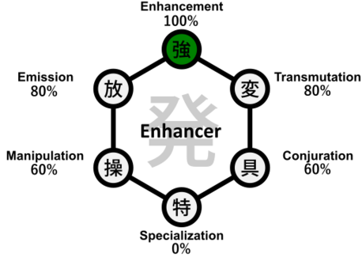

Hunter X Hunter
Enhancer Nen Type
Enhancers specialize in strengthening and reinforcing their aura to boost physical abilities. This type is known for raw power and excels in close combat, increasing the strength, speed, and durability of the user.

Key Characteristics of Enhancers
- Boost physical strength and resilience.
- Great for straightforward, aggressive fighting styles.
- Often have high endurance and powerful melee attacks.
- Simple but effective abilities.
Video Overview
Enhancers rely on mental discipline to maintain and enhance their physical abilities, making them formidable opponents in direct confrontations.
Understanding Enhancer abilities is essential to grasp the fundamentals of Nen combat in Hunter x Hunter.